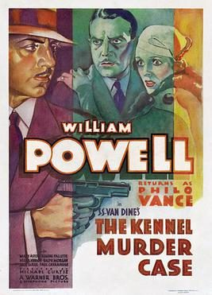

The Kennel Murder Case

Starring: William Powell, Mary Astor, Eugene Pallette
Director: Michael Curtiz
Writer: Peter Milne, Robert N. Lee
The Kennel Murder Case is a 1933 American pre-Code mystery film adapted from the 1933 novel of the same name by S. S. Van Dine. Directed by Michael Curtiz for Warner Bros. Pictures, it stars William Powell and Mary Astor. Powell's role as Philo Vance is not the actor's first performance as the aristocratic sleuth.
Trivia
- Based on The Kennel Murder Case (novel by S. S. Van Dine).
- Early Vance films had been made by Paramount Pictures, and later ones would be made by Warners, Paramount and MGM. Vance would be played by Warren William, Paul Lukas, Edmund Lowe, and James Stephenson.
- Director Michael Curtiz covered the talkiness of the film, endemic to whodunnits of this sort, by using a mobile camera in some scenes, and kept up the pace of the film with dissolves and wipes.
Previous Showings
3 Runs • 0 Festivals
All runs on record (3):
- June 4 - 5, 1990w/ Charlie Chan in Egypt
- July 1 - 2, 1992w/ Lawyer Man
- September 14 - 16, 1994w/ The Maltese Falcon (1931)